WaveNet: Explicit Cached Audio Generation
Abstract
A causal gated stack predicts the next mu-law audio code. An owning cache keeps each dilated block's own past inputs so generation can advance one code at a time. Worked receptive-field, cache and codec checks precede the original tiny FSDD protocol:72/12/24 speaker-disjoint windows, five width4 residual blocks, RF33, and27 Adam writes. The complete program retains cold-start generation, held-out prompt continuations and all eight WAV exports. All5632 sampled codes and logits reproduce the source; cache/full-forward probes and independent RF-context calculations verify the state updates. The fixed-final test loss is 7.96727 bits per mu-law sample, worse than fitting-only unigram6.94609 and transition6.23728 baselines. These short unconditioned draws establish no speech quality, recognition, text-to-speech or vocoder benchmark performance.
Cache each layer's own input rather than only raw codes
[van den Oord et al., WaveNet: A Generative Model for Raw Audio (2016)](https://arxiv.org/abs/1609.03499) uses dilated causal gated convolutions for autoregressive audio. This compact teaching stack is unconditional: residual width4, skip width8, one cycle of five dilations1,2,4,8,16 and a256-code head. It has no text, speaker or class conditioning, dropout or normalization. Observed code at time t predicts code t+1. Thus the inclusive same-time input of a convolution does not leak the next-code target.
A two-tap input convolution retains the previous and current code. Each block uses a joined two-tap filter/gate projection, tanh(filter)×sigmoid(gate), a1x1 skip and, except at the final block, a1x1 residual projection. Sum skips, apply ReLU, a biased1x1 post projection, ReLU and a biased256-code head. The exact receptive field in *observed input codes* is
At dilation d, a ring of length d stores that block's own width4 input features. Slot t mod d contains its input from t−d. Read old/current taps in source order, form the gate and projections, then replace that slot with the current input. A raw-code ring or a ring of a different layer's features would change the model.
#include <dm/dm.hpp>
int main(){
std::filesystem::create_directories("build");dm::graphics::Diagram d(70,1800);
dm::graphics::DiagramNodeStyle s;s.width=10;s.height=5;s.font_size=31;
d.node("code",{-25,2},"Observed code\nPrevious/current tap",s)
.node("current",{-11,2},"Current block input\nWidth4 features",s)
.node("ring",{-11,-8},"Own input ring\nRead t-d at t mod d",s)
.node("gate",{3,2},"Two taps\ntanh x sigmoid",s)
.node("skip",{17,2},"Skip + residual\nNo final residual",s)
.node("head",{31,2},"Post / head\nNext-code logits",s)
.edge("code","current").edge("current","gate").edge("ring","gate")
.edge("gate","skip").edge("skip","head").save_svg("build/wv_method.svg");
}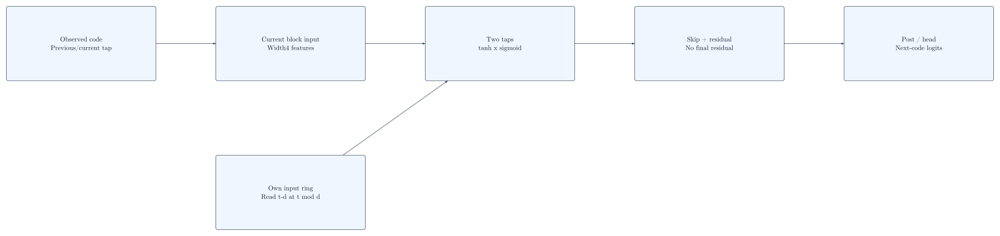
Hand-check a two-block RF5 cache before loading recordings
Use two classes, residual/skip width1 and dilations1,2. The receptive field is 2+1+2=5. Input code0/1 maps to current features−.5/.5 and previous features −.25/.25. Each gate is.5tanh(.4×old+.6×current), since its sigmoid preactivation is zero. Skip weights are1, the first residual weight is.25, post bias is1 and the first head weight is.75. At the true beginning with code0, both gate outputs are negative; ReLU clips their skip sum to zero, so the first head score is.75. There is no invented code-zero prefix before the beginning.
The native program checks that value, compares all seven cached/full heads, and differentiates the final head against every continuous encoded input. At final input index6, times0 and1 are outside RF5 and have exact zero partials; the preceding five positions carry a nonzero path. No fitting occurs.
#include <dm/dm.hpp>
int main(){
namespace n=dm::nn;namespace m=n::models;m::WaveStackConfig c{1,1,2,1,2};n::ParameterStore p(1);
m::WaveStack(p,n::one_hot(n::zeros({1,1},n::DType::Int32),2),c);
for(auto name:p.names())p.set(name,n::zeros(p.at(name).shape()));
p.set("input/W",n::tensor({-.25,.25,-.5,.5},{1,2,2,1}));
for(int i=1;i<=2;++i){auto name="block"+std::to_string(i);
p.set(name+"/gate/W",n::tensor({.4,0,.6,0},{1,2,1,2}));p.set(name+"/skip/W",n::ones({1,1,1,1}));}
p.set("block1/residual/W",n::full({1,1,1,1},.25));p.set("post/W",n::ones({1,1,1,1}));p.set("post/b",n::ones({1}));
p.set("output/W",n::tensor({.75,-.5},{1,1,1,2}));
auto codes=n::from_vector(std::vector<std::int32_t>{0,1,0,1,1,0,1},{1,7});auto encoded=n::one_hot(codes,2).requires_grad_();
auto full=m::WaveStack(p,encoded,c).logits;auto values=n::reshape(n::select(full,2,0),{7});
m::WaveStackCache cache(p,c);std::vector<double> cached;for(auto code:codes.to_vector<std::int32_t>())cached.push_back(cache.next(code).to_vector<float>()[0]);
if(m::WaveStackField(c)!=5||cached.front()!=.75||cache.consumed()!=7)throw std::runtime_error("Worked RF5/start");
auto error=n::max(n::abs(values-n::cast(n::from_vector(cached,{7}),n::DType::Float32))).item();
if(error>2e-6)throw std::runtime_error("Worked cached head");
auto g=n::grad(n::sum(n::slice_axis(n::slice_axis(full,1,6,7),2,0,1)),{encoded})[0];
if(n::max(n::abs(n::slice_axis(g,1,0,2))).item()!=0||n::sum(n::abs(n::slice_axis(g,1,2,7))).item()==0)throw std::runtime_error("Worked RF5 derivative");
dm::graphics::RPlot::create().lines({0,1,2,3,4,5,6},values.to_vector<double>(),"Full native forward",{37,99,235})
.points({0,1,2,3,4,5,6},cached,"Per-layer cache",{220,38,38},4)
.y_limits(.65,1.65).x_label("Observed input index").y_label("Next-code head score, class0")
.title("A hand-set RF5 stack agrees with its circular cache").save_svg("build/wv_cache_toy.svg");
std::print("RF5; first head.75; all7 heads checked, max error {:.3g}; outside-RF partials exactly0.\n",error);
}RF5; first head.75; all7 heads checked, max error 0; outside-RF partials exactly0.
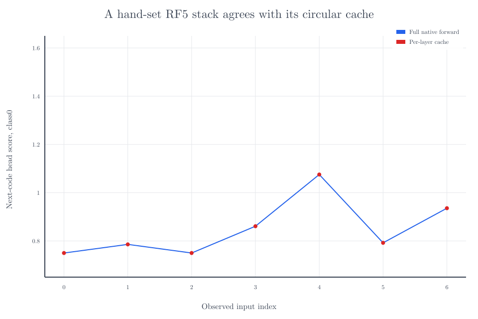
Hand-check the256-code mu-law representation
For normalized PCM amplitude x, encode with
The native inverse codec reconstructs a quantized amplitude. All256 codes round-trip, but arbitrary PCM amplitudes need not reconstruct exactly. Exact zero encodes as128; decoded128 is a small *positive* amplitude, not exactly zero. Codes127/128 straddle zero. Input PCM16 decoding uses x/32768; exported PCM16 uses the native writer's round(x×32768) and clamp, at8kHz.
#include <dm/dm.hpp>
int main(){
namespace n=dm::nn;auto codes=n::cast(n::arange(0,256),n::DType::Int32);
auto amplitude=n::mu_law_decode(codes,256,n::DType::Float64);
if(!n::equal_bits(n::mu_law_encode(amplitude),codes))throw std::runtime_error("All256 codec bins");
auto zero=n::mu_law_encode(n::zeros({1},n::DType::Float64)).item();
if(zero!=128)throw std::runtime_error("Zero code128");
dm::graphics::RPlot::create().lines(codes.to_vector<double>(),amplitude.to_vector<double>(),"Inverse mu-law",{37,99,235})
.y_limits(-1.1,1.6).x_label("Mu-law code").y_label("Decoded normalized amplitude")
.title("The discrete codec allocates many codes near zero amplitude").save_svg("build/wv_codec.svg");
std::print("All256 codes roundtrip; zero encodes128; decoded128={:.8f}.\n",amplitude.to_vector<double>()[128]);
}All256 codes roundtrip; zero encodes128; decoded128=0.00008621.
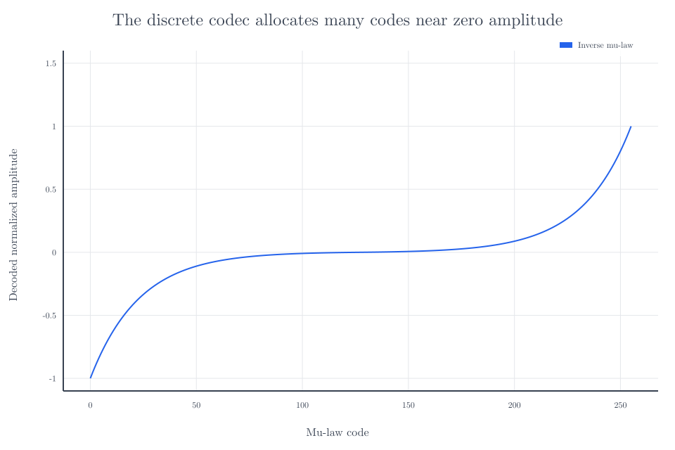
Trace the actual5068-value compact model
The two-tap ingress contributes2052 values; five joined gate projections360, five skip projections200, four residual projections80, post projection72 and head2304. Total5068 values in34 leaves. Kernels use the source Glorot uniform radius sqrt(6/(kernel×(in+out))), biases zero, native initializer seed541. The last block omits its unused residual projection. The traced composite block below groups the executed five-block skip path; exact output shapes and all learned values come from the real forward computation.
#include <dm/dm.hpp>
int main(){
namespace n=dm::nn;namespace m=n::models;m::WaveStackConfig c{4,8,5,1,256};n::ParameterStore p(541);
n::Module model([&](const n::Tensor& x){auto out=m::WaveStack(p,x,c);
n::model_stage("5 gated blocks / dilations1,2,4,8,16",x,out.skip);
return n::model_stage("ReLU / post / ReLU /256-code head",out.skip,out.logits);
},"Generative WaveNet:5068 stored values, RF33");
n::ModelPlotOptions options;options.detail=n::ModelPlotDetail::Blocks;options.sizing.minimum_extent=1;options.sizing.max_planes=4;
auto figure=model.plot(n::zeros({1,64,256}),options);
if(figure.parameter_count()!=5068||p.size()!=34)throw std::runtime_error("Actual source census");
figure.save_svg("build/wv_network.svg");
}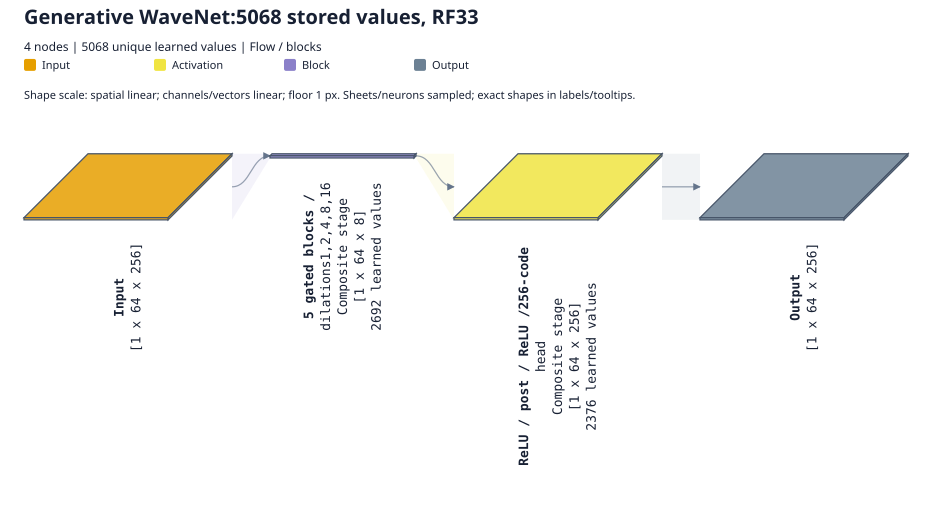
Preserve original recordings, shifts, warmup and fixed endpoint
The [FSDD v1.0.10 source](https://github.com/Jakobovski/free-spoken-digit-dataset/tree/v1.0.10) is retained with its CC BY-SA4.0 attribution and release provenance. The pinned release ZIP has16419872 bytes and SHA256 c680098f5d2355ba7cc4bd8b0ca9e0a24c00ebe3b4c552208889a4d28d4fbc2b. There are27 original mono8kHz PCM16 clips, digits0/1/2. Takes0/1 are retained for george, jackson and yweweler; take0 for lucas, nicolas and theo. Use the first 1025 actual samples of each clip, with no resampling, peak normalization or synthetic replacement. Four256-input/next-target windows start at0,256,512,768. No window crosses a recording boundary; windows of one clip remain dependent.
Fit uses18 clips/four speakers and72 windows, validation3 theo clips/12 windows, test6 yweweler clips/24 windows. Recording and speaker sets are disjoint across these pools. This is a custom tiny teaching split, not the official FSDD test protocol or72 independent speakers. Three prompts are the first384 codes of held-out test recordings:128 observed codes and256 reference continuation codes. They share source recordings with the test pool, never the fit pool. Native audio preparation and LoadWaveStack retain/validate source, speaker and start metadata. The report acquires missing inputs through the canonical native preparation path; existing verified inputs are reused.
Input code at index t targets code t+1. Training NLL excludes positions0..31 and scores positions32..255,224 per window. Always pass start32 explicitly; the older foundation stack's default127 is a different protocol. Three epochs use Adam.001, batch8 and BatchOrder(72,8,8713):27 total updates, no checkpoint selection, schedule, clipping, tuning or refit. All weights, first/final partials and every gradient/update/iteration record remain available. A new store loads the fixed third-epoch checkpoint exactly. No TF initial arrays were present; this is the source native seed541 run, not a recorded TF trajectory comparison.
The complete program retains both synthesis loops. Cold start uses one code128 for each of two rows and2048 sampled codes per row, seed8729. Continuation uses three observed128-code prompts and512 sampled codes, seed8731. The midpoint MT19937 bank is drawn case first and then time, with u=(raw+.5)/2^32. Each step selects one code by the inverse softmax CDF, feeds the sampled code back, and retains its raw cached logits. No lower prompt truth enters generation. The full native RF33 forward is checked at the first65 draws, every128th draw and the final draw:369 probes across both runs, max error2.98e−8, tolerance2e−5.
Training uses native Float32 WaveNll. For original17-digit history summaries, per-point max/logsumexp/target arithmetic is native Double, followed by a serial row/time sum in the source order. A differently grouped whole-array reduction changes only a few final bits; it must not silently replace that formatting protocol. This summary choice does not alter the fitted Float32 gradients.
#include <dm/dm.hpp>
namespace n=dm::nn;namespace m=n::models;
using T=n::Tensor;using A=std::map<std::string,T>;namespace fs=std::filesystem;
void Save(const fs::path& file,const A& fields){
n::NamedTensors named;for(const auto& [key,value]:fields)named.emplace_back(key,value);
n::save_npz(file.string(),named);
}
A Weights(const n::ParameterStore& p){
A out;for(const auto& name:p.names())out.emplace(name,p.at(name).detach().clone());return out;
}
bool Equal(const A& a,const A& b){
if(a.size()!=b.size())return false;
for(const auto& [key,value]:a)if(!b.count(key)||!n::equal_bits(value,b.at(key)))return false;
return true;
}
A Partials(const n::ParameterStore& p,const std::vector<T>& g){
A out;for(std::size_t k=0;k<g.size();++k)out.emplace(p.names()[k],g[k].detach());return out;
}
const m::WaveStackConfig config{4,8,5,1,256};
T Predict(n::ParameterStore& p,const T& codes){
n::NoGradGuard guard;return m::WaveStack(p,n::one_hot(codes,256),config).logits.detach().contiguous();
}
double SerialMean(const T& points){auto values=points.to_vector<double>();return std::accumulate(values.begin(),values.end(),0.)/values.size();}
double Nll(const T& logits,const m::WaveData& data){
n::NoGradGuard guard;auto z=n::cast(n::slice_axis(logits,1,32,256),n::DType::Float64);
auto y=n::slice_axis(data.target,1,32,256),maximum=n::max(z,{2},true);
auto mass=n::sum(n::exp(z-maximum),{2});auto actual=n::sum(z*n::one_hot(y,256,1,0,n::DType::Float64),{2});
return SerialMean(n::squeeze(maximum,{2})+n::log(mass)-actual);
}
struct Draw {A fields;double parity=0;std::vector<double> errors;std::vector<std::int32_t> times,rows;};
Draw Sample(n::ParameterStore& p,const T& prefix,int count,std::uint32_t seed){
n::NoGradGuard guard;const int cases=int(prefix.size(0)),warm=int(prefix.size(1)),width=warm+count;
std::mt19937 rng(seed);std::vector<double> values(static_cast<std::size_t>(cases*count));
for(auto& u:values)u=(double(rng())+.5)/4294967296.;
auto bank=n::from_vector(values,{cases,count});
std::vector<T> code_rows,head_rows;Draw out;
for(int row=0;row<cases;++row){
m::WaveStackCache cache(p,config);std::vector<std::int32_t> codes;
auto observed=n::select(prefix,0,row).to_vector<std::int32_t>();T scores;
for(auto code:observed){codes.push_back(code);scores=cache.next(code);}
std::vector<T> heads;
for(int step=0;step<count;++step){
heads.push_back(scores);
if(step<65||step%128==0||step+1==count){
const int end=warm+step,start=std::max(0,end-m::WaveStackField(config));
std::vector<std::int32_t> context(codes.begin()+start,codes.begin()+end);
auto native=Predict(p,n::from_vector(context,{1,end-start}));
auto last=n::reshape(n::select(native,1,native.size(1)-1),{256});
double error=n::max(n::abs(n::cast(scores,n::DType::Float64)-n::cast(last,n::DType::Float64))).item();
out.parity=std::max(out.parity,error);out.errors.push_back(error);out.times.push_back(step);out.rows.push_back(row);
}
auto z=n::cast(scores,n::DType::Float64);auto mass=n::exp(z-n::max(z));
auto cumulative=n::cumsum(mass/n::sum(mass),0);
double u=values[static_cast<std::size_t>(row*count+step)];
int code=int(n::sum(n::cast(n::less_equal(cumulative,u),n::DType::Int32)).item());code=std::min(code,255);
codes.push_back(code);scores=cache.next(code);
}
if(cache.consumed()!=width)throw std::runtime_error("Cache consumes all observed and sampled codes");
code_rows.push_back(n::from_vector(codes,{width}));head_rows.push_back(n::stack(heads));
}
if(out.parity>=2e-5)throw std::runtime_error("Cached/native RF33 parity");
out.fields={{"codes",n::stack(code_rows)},{"logits",n::stack(head_rows)},{"uniform",bank}};return out;
}
void WriteAudio(const fs::path& root,const std::string& name,const T& codes){
for(std::int64_t row=0;row<codes.size(0);++row)
n::write_wav((root/(name+"_"+std::to_string(row)+".wav")).string(),n::reshape(n::mu_law_decode(n::select(codes,0,row)),{codes.size(1),1}),8000);
}
int main(){
const fs::path root="build/wavenet";fs::create_directories(root/"phases");n::set_num_threads(4);
fs::path inputs=fs::path(dm::datasets::data_home())/"wavenet";
if(const auto* path=std::getenv("DATAMUNGE_WAVENET_DIR"))inputs=path;
if(!fs::exists(inputs/"wavenet_stack.npz"))dm::datasets::prepare_example_data("audio",inputs.string());
const auto data=m::LoadWaveStack(inputs);const auto& fit=data.pools[0];const auto& validation=data.pools[1];const auto& test=data.pools[2];
fs::copy_file(inputs/"wavenet_stack.npz",root/"data.npz",fs::copy_options::overwrite_existing);
fs::copy_file(inputs/"manifest.json",root/"data_manifest.json",fs::copy_options::overwrite_existing);
n::ParameterStore p(541);{n::NoGradGuard guard;m::WaveStack(p,n::one_hot(n::zeros({1,2},n::DType::Int32),256),config);}
if(p.count()!=5068||p.size()!=34||m::WaveStackField(config)!=33)throw std::runtime_error("5068/34/RF33 source census");
Save(root/"initial_arrays.npz",Weights(p));Save(root/"initial_outputs.npz",{{"logits",Predict(p,test.input)}});
n::Optimizer optimizer(p,.001,{n::OptimizerKind::Adam});n::BatchOrder order(72,8,8713);
std::ofstream history(root/"history.tsv"),batches(root/"batches.tsv");history.precision(17);
history<<"epoch\tvalidation_nll\tvalidation_bits_per_sample\n";batches<<"epoch\tstep\trow\tsource_id\n";
auto source_ids=fit.source.to_vector<std::int32_t>();int updates=0;m::WaveData first;std::vector<double> validation_bits;
for(int epoch=1;epoch<=3;++epoch){
order.begin_epoch();for(;;){auto rows=order.next();if(rows.empty())break;auto batch=m::WaveRows(fit,rows);
if(!updates){first=batch;Save(root/"first_batch.npz",{{"input",batch.input},{"target",batch.target}});
Save(root/"first_forward.npz",{{"logits",Predict(p,batch.input)}});}
auto logits=m::WaveStack(p,n::one_hot(batch.input,256),config).logits;
auto loss=m::WaveNll(logits,batch.target,256,32);auto gradients=n::grad(loss,p.parameters());
auto phase=root/"phases"/("batch"+std::to_string(updates));Save(phase.string()+"-gradient.npz",Partials(p,gradients));
if(!updates)Save(root/"initial_gradients.npz",Partials(p,gradients));
optimizer.step(gradients);auto after=Weights(p);Save(phase.string()+"-after.npz",after);
Save(phase.string()+"-iterations.npz",{{"iterations",n::from_vector(std::vector<std::int64_t>{optimizer.iterations()},{1})}});
if(!updates)Save(root/"first_after.npz",after);
for(auto row:rows)batches<<epoch<<'\t'<<updates<<'\t'<<row<<'\t'<<source_ids[row]<<'\n';++updates;
}
auto prediction=Predict(p,validation.input);double loss=Nll(prediction,validation);
if(std::abs(m::WaveNll(prediction,validation.target,256,32).item()-loss)>2e-5)throw std::runtime_error("Float32 graph and Double scalar loss");
history<<epoch<<'\t'<<loss<<'\t'<<loss/std::log(2.)<<'\n';validation_bits.push_back(loss/std::log(2.));
Save(root/("epoch"+std::to_string(epoch)+"_arrays.npz"),Weights(p));
Save(root/("epoch"+std::to_string(epoch)+"_validation.npz"),{{"logits",prediction}});
}
if(updates!=27||optimizer.iterations()!=27)throw std::runtime_error("27 Adam writes");
p.save((root/"final.npz").string());Save(root/"model_arrays.npz",Weights(p));
auto final_logits=m::WaveStack(p,n::one_hot(first.input,256),config).logits;
Save(root/"final_gradients.npz",Partials(p,n::grad(m::WaveNll(final_logits,first.target,256,32),p.parameters())));
n::ParameterStore restored(541);{n::NoGradGuard guard;m::WaveStack(restored,n::one_hot(n::zeros({1,2},n::DType::Int32),256),config);}
restored.load((root/"final.npz").string(),true);if(!Equal(Weights(p),Weights(restored)))throw std::runtime_error("Fresh exact restore");
auto before=Weights(restored);auto logits=Predict(restored,test.input);Save(root/"outputs.npz",{{"logits",logits}});
if(!n::equal_bits(logits,Predict(restored,test.input)))throw std::runtime_error("Frozen repeat logits");
auto shifted=test.input+71;shifted=n::where(n::greater_equal(shifted,256),shifted-256,shifted);
auto changed=n::where(n::greater_equal(n::reshape(n::arange(0,256),{1,256}),128),shifted,test.input);
auto altered=Predict(restored,changed);Save(root/"future_control.npz",{{"input",changed},{"logits",altered}});
if(n::max(n::abs(n::slice_axis(logits-altered,1,0,128))).item()!=0)throw std::runtime_error("Future-token prefix invariance");
auto encoded=n::one_hot(n::slice_axis(n::take_rows(test.input,{0}),1,0,64),256).requires_grad_();
auto causal=m::WaveStack(restored,encoded,config).logits;
auto objective=n::sum(n::slice_axis(n::slice_axis(causal,1,48,49),2,0,1));auto gradient=n::grad(objective,{encoded})[0];
if(n::max(n::abs(n::slice_axis(gradient,1,0,16))).item()!=0||n::max(n::abs(n::slice_axis(gradient,1,49,64))).item()!=0||
n::sum(n::abs(n::slice_axis(gradient,1,16,49))).item()<=1e-6)throw std::runtime_error("Exact RF33 derivative support");
Save(root/"causality.npz",{{"encoded_input",encoded.detach()},{"logits",causal.detach()},{"gradient",gradient.detach()}});
auto codes=n::cast(n::arange(0,256),n::DType::Int32);
if(!n::equal_bits(n::mu_law_encode(n::mu_law_decode(codes,256,n::DType::Float64)),codes))throw std::runtime_error("All256 codec bins roundtrip");
auto cold=Sample(restored,n::full({2,1},128,n::DType::Int32),2048,8729);
Save(root/"unconditional.npz",cold.fields);WriteAudio(root,"unconditional",cold.fields.at("codes"));
auto again=Sample(restored,n::full({2,1},128,n::DType::Int32),2048,8729);
if(!Equal(cold.fields,again.fields))throw std::runtime_error("Repeated full cold-start draws");
auto prompt=n::slice_axis(data.prompts,1,0,128).contiguous();auto continuation=Sample(restored,prompt,512,8731);
continuation.fields["source_ids"]=data.prompt_source_ids;
Save(root/"continuation.npz",continuation.fields);WriteAudio(root,"continuation",continuation.fields.at("codes"));WriteAudio(root,"reference",data.prompts);
if(!n::equal_bits(prompt,n::slice_axis(continuation.fields.at("codes"),1,0,128)))throw std::runtime_error("Observed prompt preservation");
if(!Equal(before,Weights(restored)))throw std::runtime_error("Inference modified store");
{n::NoGradGuard guard;
auto counts=m::WaveCountTargets(fit,32);auto unigram=counts.first/n::sum(counts.first),transition=counts.second/n::sum(counts.second,{1},true);
Save(root/"baseline.npz",{{"unigram_probability",unigram},{"transition_probability",transition}});
auto x=n::slice_axis(test.input,1,32,256),y=n::slice_axis(test.target,1,32,256);
double unigram_nll=SerialMean(-n::log(n::gather(unigram,y))),transition_nll=SerialMean(-n::log(n::gather(n::reshape(transition,{65536}),x*256+y)));
double loss=Nll(logits,test);std::vector<double> errors=cold.errors;errors.insert(errors.end(),continuation.errors.begin(),continuation.errors.end());
std::vector<std::int32_t> times=cold.times,rows=cold.rows,kind(cold.errors.size(),0);
times.insert(times.end(),continuation.times.begin(),continuation.times.end());rows.insert(rows.end(),continuation.rows.begin(),continuation.rows.end());kind.insert(kind.end(),continuation.errors.size(),1);
const auto probes=std::int64_t(errors.size());if(probes!=369)throw std::runtime_error("All369 full RF probe heads");
Save(root/"cache_probes.npz",{{"error",n::from_vector(errors,{probes})},{"time",n::from_vector(times,{probes})},{"row",n::from_vector(rows,{probes})},{"kind",n::from_vector(kind,{probes})}});
Save(root/"summary.npz",{{"validation_bits",n::from_vector(validation_bits,{3})},{"test_bits",n::full({},loss/std::log(2.),n::DType::Float64)},
{"unigram_bits",n::full({},unigram_nll/std::log(2.),n::DType::Float64)},{"transition_bits",n::full({},transition_nll/std::log(2.),n::DType::Float64)}});
std::print("| Fixed source protocol | Value |\n|---|---:|\n| Fit / validation / test windows |72 /12 /24|\n| Learned values / leaves |5068 /34|\n| Receptive field / warmup |33 /32|\n| Adam writes / generated codes |27 /5632|\n| Cache/native full-head probes |369|\n| Max probe error |{:.3g}|\n| Test bits per mu-law sample |{:.6f}|\n| Fit-only unigram bits |{:.6f}|\n| Fit-only transition bits |{:.6f}|\n| Uniform bits |8|\n",std::max(cold.parity,continuation.parity),loss/std::log(2.),unigram_nll/std::log(2.),transition_nll/std::log(2.));
}
}| Fixed source protocol | Value |
|---|---|
| Fit / validation / test windows | 72 /12 /24 |
| Learned values / leaves | 5068 /34 |
| Receptive field / warmup | 33 /32 |
| Adam writes / generated codes | 27 /5632 |
| Cache/native full-head probes | 369 |
| Max probe error | 2.98e-08 |
| Test bits per mu-law sample | 7.967270 |
| Fit-only unigram bits | 6.946092 |
| Fit-only transition bits | 6.237285 |
| Uniform bits | 8 |
Inspect all three held-out reference code sequences
These inverse-codebook waveforms show all384 reference codes of each held-out prompt, at the real8kHz time scale. Case0/1/2 receives a vertical display offset 0/2.5/5, disclosed on the axis; the offset is never applied to audio or model inputs. The observed prefix is16ms, while the original384-code reference lasts 48ms. Source IDs are retained in the legend and archive.
#include <dm/dm.hpp>
int main(){
namespace n=dm::nn;std::map<std::string,n::Tensor> a;for(auto& [k,v]:n::load_npz("build/wavenet/data.npz"))a.emplace(k,v);
auto decoded=n::mu_law_decode(a.at("prompts"),256,n::DType::Float64);auto ids=a.at("prompt_source_ids").to_vector<std::int32_t>();
auto time=n::cast(n::arange(0,384),n::DType::Float64)/8000;auto plot=dm::graphics::RPlot::create();
const std::vector<dm::graphics::RGB> colours{{37,99,235},{220,38,38},{22,163,74}};
for(int row=0;row<3;++row)plot.lines(time.to_vector<double>(),(n::select(decoded,0,row)+row*2.5).to_vector<double>(),"Source "+std::to_string(ids[row]),colours[row]);
plot.y_limits(-1.1,7.4).x_label("Seconds at8kHz").y_label("Decoded amplitude +2.5 x case index")
.title("All three original held-out384-code references").save_svg("build/wv_reference.svg");
}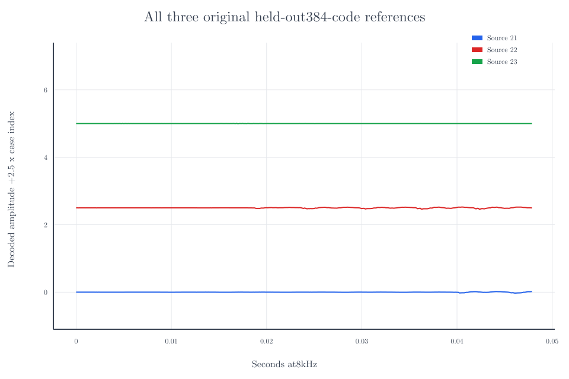
Keep the negative likelihood result and both baselines visible
Fitting-only Laplace1 counts estimate a256-code unigram and a256×256 transition row for each preceding code. Counts use only scored fitting positions32..255; validation/test observations do not fit the baseline. Transition uses the true preceding code when scoring test windows, just as the neural model is teacher forced. It does not receive a free-running reference future. Uniform codes cost exactly8 bits per sample. The fixed neural endpoint improves only slightly on uniform and remains worse than both fitted baselines.
#include <dm/dm.hpp>
int main(){
namespace n=dm::nn;std::map<std::string,n::Tensor> a;for(auto& [k,v]:n::load_npz("build/wavenet/summary.npz"))a.emplace(k,v);
auto u=a.at("unigram_bits").item(),t=a.at("transition_bits").item();
dm::graphics::RPlot::create().lines({1,2,3},a.at("validation_bits").to_vector<double>(),"Validation",{37,99,235})
.points({3},{a.at("test_bits").item()},"Fixed-final test",{220,38,38},6)
.lines({1,3},{u,u},"Fit-only unigram",{22,163,74}).lines({1,3},{t,t},"Fit-only transition",{147,51,234})
.lines({1,3},{8,8},"Uniform codes",{100,116,139})
.y_limits(5.9,9.6).x_label("Fixed epoch").y_label("Bits per mu-law next-code sample")
.title("The compact neural endpoint remains worse than both fitted baselines").save_svg("build/wv_history.svg");
}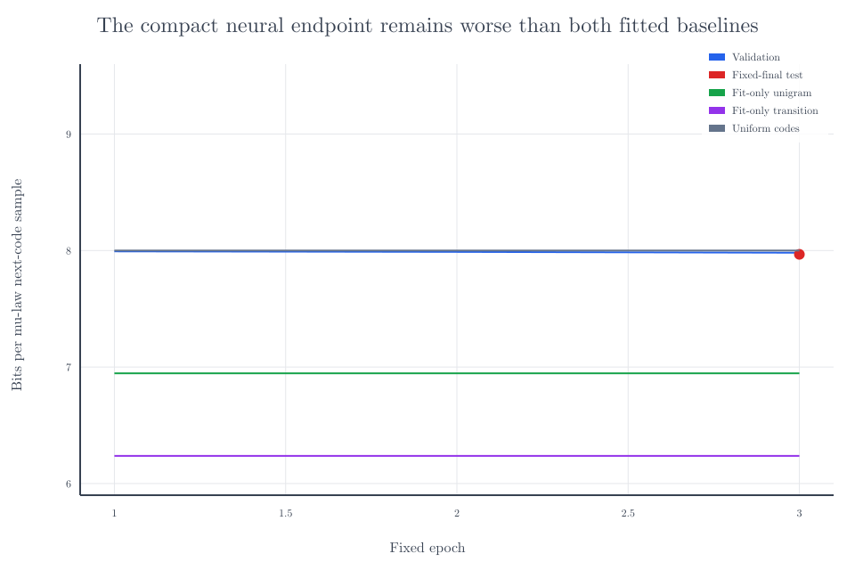
Inspect every scored point of one held-out window
The following native per-position losses retain all224 scored target positions of the first held-out window. The initial32 positions supply context but are not plotted as scored targets. Every method is evaluated on the same target code and true preceding input code. Variability of individual losses does not change the whole-pool negative result or justify selecting favorable positions.
#include <dm/dm.hpp>
int main(){
namespace n=dm::nn;std::map<std::string,n::Tensor> data,base; n::Tensor logits;
for(auto& [k,v]:n::load_npz("build/wavenet/data.npz"))data.emplace(k,v);
for(auto& [k,v]:n::load_npz("build/wavenet/baseline.npz"))base.emplace(k,v);
for(auto& [k,v]:n::load_npz("build/wavenet/outputs.npz"))if(k=="logits")logits=v;
auto target=n::slice_axis(n::select(data.at("test_target"),0,0),0,32,256),input=n::slice_axis(n::select(data.at("test_input"),0,0),0,32,256);
auto z=n::cast(n::slice_axis(n::select(logits,0,0),0,32,256),n::DType::Float64);
auto neural=-n::sum(n::log_softmax(z)*n::one_hot(target,256,1,0,n::DType::Float64),{1});
auto unigram=-n::log(n::gather(base.at("unigram_probability"),target));
auto transition=-n::log(n::gather(n::reshape(base.at("transition_probability"),{65536}),input*256+target));
auto time=n::arange(32,256).to_vector<double>();
dm::graphics::RPlot::create().lines(time,neural.to_vector<double>(),"Neural",{37,99,235})
.lines(time,unigram.to_vector<double>(),"Fit-only unigram",{22,163,74}).lines(time,transition.to_vector<double>(),"Fit-only transition",{147,51,234})
.y_limits(0,14).x_label("Scored input position; target is the following code").y_label("Per-position NLL (nats)")
.title("All224 scored positions of the first held-out window").save_svg("build/wv_point_losses.svg");
n::save_npz("build/wavenet/point_losses.npz",{{"neural",neural},{"unigram",unigram},{"transition",transition}});
}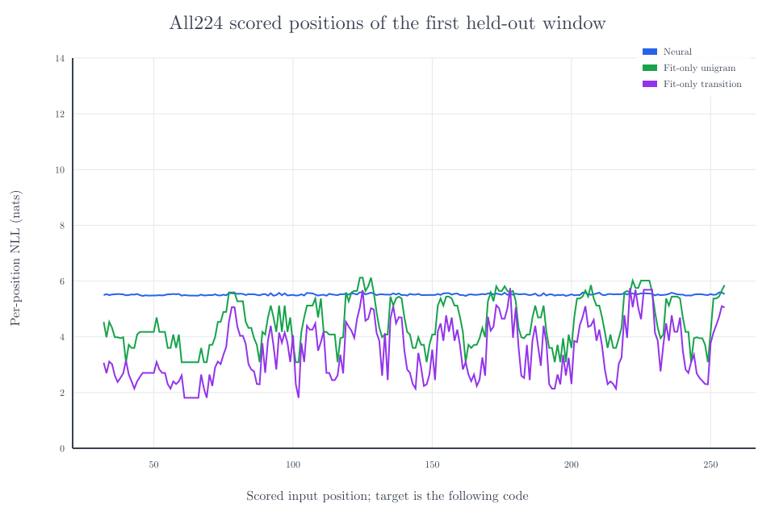
Verify the exact input receptive field and future exclusion
The saved structural fixture differentiates logit[0,48,0] with respect to the entire continuous encoded input[1,64,256]. All16384 partials remain available. Every time before16 or after48 is exactly zero; at least one partial inside 16..48 is nonzero. That is RF33 in observed codes and excludes target future. Separately, every actual code from t128 onward is changed by+71 modulo256 in all24 test windows; all earlier predictions must remain bit identical. These finite interventions complement a derivative check that alone could vanish through inactive ReLUs. No attribution or causal-inference claim is made.
#include <dm/dm.hpp>
int main(){
namespace n=dm::nn;n::Tensor g;for(auto& [k,v]:n::load_npz("build/wavenet/causality.npz"))if(k=="gradient")g=n::abs(v);
auto show=n::log1p(g*1000);show=show/n::max(show);
n::save_image_grid(n::reshape(show,{1,64,256,1}),"build/wv_causality.png",1,0,1,0,0,3);
}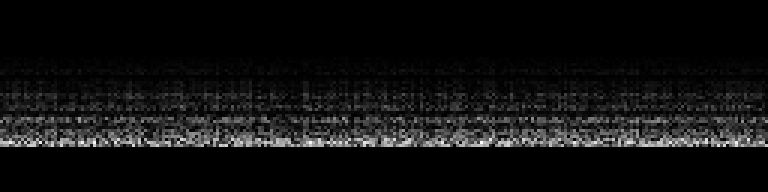
Retain all cold-start waveforms and all continuation waveforms
The first plot shows both cold-start outputs,2049 codes each: the observed code128 followed by2048 actual draws, at8kHz. This is256.125ms including the seed code. The second shows all three640-code continuations:128 observed codes plus512 draws,80ms total. The reference clips above last only48ms, so the last 32ms of a continuation has no paired reference target. Each plot retains every codebook amplitude; display offsets never modify the WAVs or sampled codes.
#include <dm/dm.hpp>
int main(){
namespace n=dm::nn;n::Tensor codes;for(auto& [k,v]:n::load_npz("build/wavenet/unconditional.npz"))if(k=="codes")codes=v;
auto amplitude=n::mu_law_decode(codes,256,n::DType::Float64);auto time=n::cast(n::arange(0,codes.size(1)),n::DType::Float64)/8000;
auto plot=dm::graphics::RPlot::create();for(int row=0;row<2;++row)
plot.lines(time.to_vector<double>(),(n::select(amplitude,0,row)+2.5*row).to_vector<double>(),"Cold-start case "+std::to_string(row),row?dm::graphics::RGB{220,38,38}:dm::graphics::RGB{37,99,235});
plot.y_limits(-1.1,5).x_label("Seconds at8kHz").y_label("Decoded amplitude +2.5 x case index")
.title("Both complete cold-start sampled-feedback streams").save_svg("build/wv_cold.svg");
}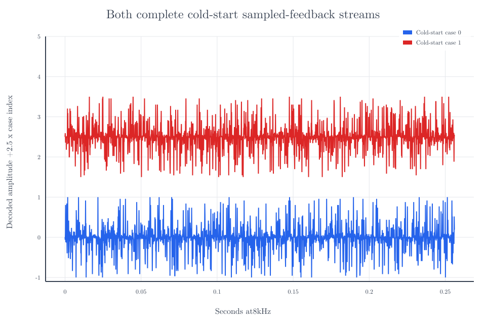
#include <dm/dm.hpp>
int main(){
namespace n=dm::nn;std::map<std::string,n::Tensor> a;for(auto& [k,v]:n::load_npz("build/wavenet/continuation.npz"))a.emplace(k,v);
auto amplitude=n::mu_law_decode(a.at("codes"),256,n::DType::Float64),ids=a.at("source_ids");
auto time=n::cast(n::arange(0,640),n::DType::Float64)/8000;auto plot=dm::graphics::RPlot::create();
const std::vector<dm::graphics::RGB> colours{{37,99,235},{220,38,38},{22,163,74}};
for(int row=0;row<3;++row)plot.lines(time.to_vector<double>(),(n::select(amplitude,0,row)+2.5*row).to_vector<double>(),"Source "+std::to_string(ids.to_vector<std::int32_t>()[row]),colours[row]);
plot.y_limits(-1.1,7.4).x_label("Seconds at8kHz; observed prefix ends at.016").y_label("Decoded amplitude +2.5 x case index")
.title("All held-out prompt continuations preserve their first128 codes").save_svg("build/wv_continuation.svg");
}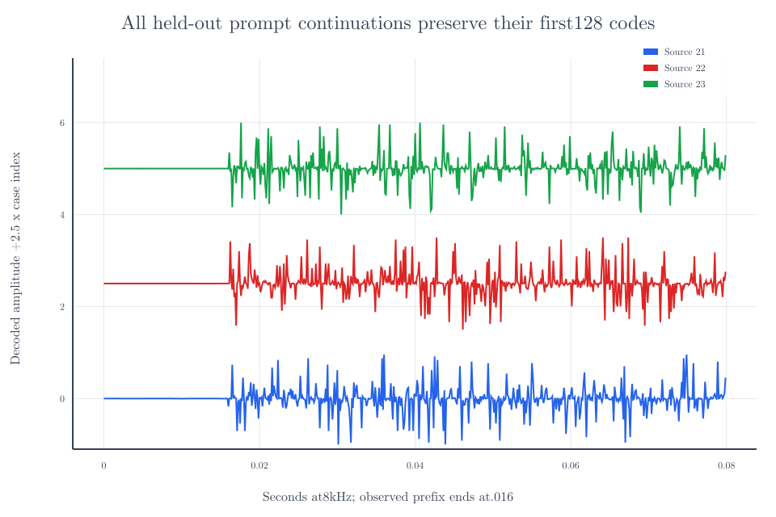
Check the cache against the full33-code computation
The plot retains all369 probe errors, without averaging by case or dropping zeros. First162 probes come from the two cold streams; the last207 from three prompt streams. Both compare all256 head logits at each probe. Magnitudes are scaled by10^8 only for readable axes; stored errors remain in original units. The full independent NumPy audit goes further: it recomputes every one of5632 sampled heads from actual RF33 contexts and reproduces every sampled code.
#include <dm/dm.hpp>
int main(){
namespace n=dm::nn;n::Tensor error;for(auto& [k,v]:n::load_npz("build/wavenet/cache_probes.npz"))if(k=="error")error=v;
auto x=n::arange(0,369);auto scaled=error*1e8;
dm::graphics::RPlot::create().points(n::slice_axis(x,0,0,162).to_vector<double>(),n::slice_axis(scaled,0,0,162).to_vector<double>(),"Cold-start probes",{37,99,235},2)
.points(n::slice_axis(x,0,162,369).to_vector<double>(),n::slice_axis(scaled,0,162,369).to_vector<double>(),"Prompt probes",{220,38,38},2)
.y_limits(-.1,5).x_label("Probe index across cases").y_label("Maximum absolute logit error x10^8")
.title("All369 cached/full-forward probe errors remain tiny").save_svg("build/wv_probes.svg");
}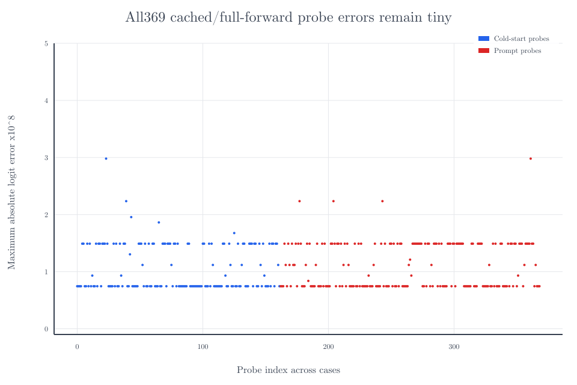
Play or download all eight unfiltered source-equivalent WAV files
The native PCM16 writer exports both cold starts, all three prompt continuations and all three real reference-code reconstructions. Every WAV is byte identical to the corresponding original program output; independent PCM checks cover all 7170 samples. These files are extremely short clip beginnings and tiny-model draws. Likelihood/code/cache fidelity does not establish intelligibility or perceptual audio quality. Attribution remains with the original FSDD release; reference-code reconstructions are transformed representations of those sources.
#include <dm/dm.hpp>
int main(){
namespace fs=std::filesystem;fs::create_directories("figures");
for(const std::string name:{"unconditional","continuation","reference"}){
const int count=name=="unconditional"?2:3;
for(int row=0;row<count;++row){auto file=name+"_"+std::to_string(row)+".wav",exported="wv_"+file;
fs::copy_file(fs::path("build/wavenet")/file,fs::path("figures")/exported,fs::copy_options::overwrite_existing);
std::print("{} case{}\n\n<audio controls><source src=\"figures/{}\" type=\"audio/wav\"></audio>\n\n[Download WAV|file:figures/{}].\n\n",name,row,exported,exported);
}
}
}unconditional case0
unconditional case1
continuation case0
continuation case1
continuation case2
reference case0
reference case1
reference case2
Audit evidence and interpretation
The complete report reproduces22 original NPZ archives/9283192 values and81 captured gradient/update/iteration archives/273699 values exactly, together with batch/history TSVs, the source manifest and all eight WAVs. Numerical plots are new native figures; they retain every stated time point rather than reproducing the old raster drawing style. Programs and native model/cache calls remain editable here. Restored likelihood, derivatives, probes and generation leave the store unchanged. The cached snapshot owns its required Float32 weights and histories; invalid steps preserve state, reset restores true beginning and clone forks an independent stream. Python uses next; R uses next_code because next is reserved R syntax. Gate vectors return copied owning Tensor handles.
scripts/check_generative_wavenet.py independently verifies27675 original PCM
samples,55296 shifted input/target code values,1152 prompt codes,7618560 forward
values,163356 partials,34 finite differences,27 exact Adam writes and16384
structural derivatives. All5632 generation heads come from independent RF33
context evaluation, not a second implementation of the circular cache. All
sampled codes, midpoint MT banks and7170 exported PCM16 values match exactly.
Maximum forward/partial/sampling-head differences are2.55e−8/7.61e−9/3.06e−8.
Initial zero post biases can land on ReLU boundaries; finite differences use
fitted smooth coordinates while initial VJPs use the source derivative-zero rule.
Nine new cache tests plus527 selected C++ tests,281 Python tests and2119 R
expectations in56 files pass. All14 new definitions, six compiled header examples,
six clangd hovers and checkout/installed standalone headers pass. Report/export
checks also retain audio assets and rerun a report when a referenced WAV is
missing. The original native run and phase pins live in
build/nn-report-conversion/wavenet/baseline.json; numerical/cache/binding evidence
is under wavenet_core/. The source negative result is retained: this tiny fixed
endpoint is worse than both fitting-only baselines and supports no benchmark
speech, vocoder or recognition claim.